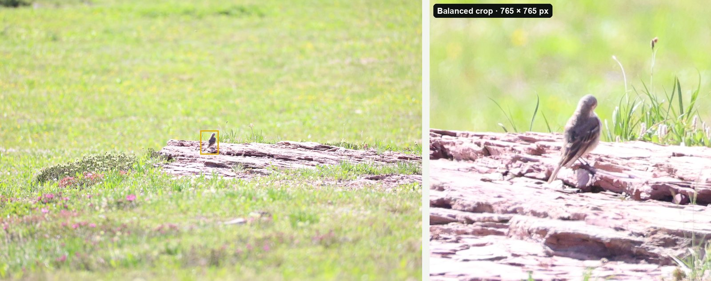

Guides · Updated 27 October 2026
How to crop bird photos for eBird
Every photo you add to an eBird checklist goes into the Macaulay Library, where it can document a record and help other birders for years. eBird publishes clear rules for those photos, and several of them are about cropping and resolution.
Short answer: crop so the bird is large but still has plenty of space around it, crop from the full-size original, and upload JPGs at their original resolution, under 10 MB each and no more than 10 different photos per species. Balanced framing (the bird fills about a third of the frame) or Wide suits eBird well. Don't upscale or use generative tools.
What eBird's photo guidelines say
From eBird's Photo upload guidelines (last modified 8 January 2025):
- Crop, but keep canvas. "Crop photos so that the bird is large and visible in the frame. However, make sure to leave plenty of "canvas" around the edge of the bird." Their reason: "More cropping can always be done later, but there's no way to get additional information back."
- Keep the resolution. "If possible, upload photos at their original resolution." The summary line is: "Upload your full-resolution images, as long as they are JPG and under 20 MB each."
- A few photos per species. "Upload multiple photos (up to 20 per species), but only if they are sufficiently different." Near-identical frames from one burst don't count as different.
- Edit lightly. "aim to make the bird look as it did in the field"; minor sharpening and slight de-noising are fine, and "AI-generated images may be considered a form of art, but are not acceptable documentation of a species."
- Leave room in front. The guidelines also suggest more space in front of the bird than behind it.
- No text, no composites. Avoid watermarks, don't upload images made from more than one photo, and replace back-of-camera snapshots with the real files later.
Newer limits. eBird's Media Upload FAQ (modified 25 August 2026) gives the current limits as 10 photos per species and 10 MB per image, lower than the guidelines above. Until the two pages agree, stay under both: JPGs under 10 MB, at most 10 different photos per species.
AI tools. eBird's AI Modification and Editing Policy (3 August 2026) accepts cropping and straightening, normal exposure and colour adjustments and moderate sharpening or noise reduction. Generative AI of any kind isn't allowed, and an artificially upscaled image can be tagged "Over-edited". A crop that keeps the camera's own pixels is exactly what eBird wants.
Which crop works best for eBird

- Balanced (bird fills about a third of the frame) is the best default. The bird is easy to see, and there's room around it.
- Wide (about a fifth) suits small birds in their habitat, birds in flight, and shots where the setting helps the identification, such as a wader on a mudflat.
- Tight (about half) is useful for a detail you want reviewers to see, such as wing bars or a bill, but check that the whole bird is still in the frame.
Whatever you choose, crop the original file. A crop of a full-size original keeps every pixel the camera recorded; a crop of a phone-sized export or a screenshot can't be enlarged back later.
Crop a whole checklist's photos at once
A good morning can leave you with a few hundred frames across 30 species. Cropping each one by hand is the slow part. BirdFrame, a Mac app, crops them all in one go:
- Pick your keepers into an Apple Photos album or a folder. JPEG, HEIC and RAW files all work, and a RAW+JPEG pair counts as one photo.
- Choose Balanced (or Wide) and a shape. BirdFrame finds the bird in every photo, including small and half-hidden ones, and crops around it.
- Export Crops to a new folder. Each crop is a JPEG cut from the full-size original, with no downscaling and nothing generated, and it keeps the photo's capture date, camera and lens details. Your originals don't change.
- Upload: open the checklist on the eBird website, click Add Media, and drag each photo onto its species (eBird's upload steps).
Questions
How should I crop photos for eBird?
So the bird is large and easy to see, but with plenty of space around it. eBird's guidelines say to leave plenty of "canvas" around the bird, because more cropping can always be done later but lost information can't be recovered.
What size should eBird photos be?
eBird asks for photos at their original resolution where possible, as JPG files. Its guidelines allow up to 20 MB per photo, but its Media Upload FAQ (August 2026) gives the current limit as 10 MB per image, so keep each file under 10 MB.
How many photos can I upload per species?
eBird's Media Upload FAQ (August 2026) gives the current limit as 10 photos per species, and only if they are sufficiently different from each other. Other eBird help pages still say 20.
Can I use AI tools on eBird photos?
Only lightly. eBird's AI policy accepts cropping, straightening, normal exposure and colour adjustments and moderate sharpening or noise reduction. Generative AI isn't allowed, and an artificially upscaled image can be tagged Over-edited.
Crop every bird in one go, at full resolution. BirdFrame finds the birds in a whole album or folder and crops each one from the full-size original. Free for up to 50 photos per run.